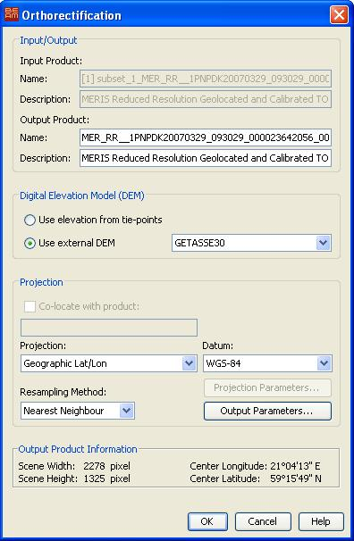

| Orthorectification Dialog | |
The orthorectification command applies a selected Available Map Projections and ortorectification to the selected input product and creates a new transposed target product. The target product will then contain corrected pixel values with respect to the Earth geoid. If you do not want the geodetic correction applied, use the Map Projection or if you want that more than one data product are resampled into the same geo-reference system, please use the Mosaic Processor.
Important note: The current ortorectification implementation as of BEAM 3.2 supports MERIS and AATSR data products only.
The orthorectification dialog equals the Map Projection Dialog except that a digital elevation model must be specified.
After the new product has been created, you can change to VISAT's product browser in order to open an image view for a band of the new product.

You can select the digital elevation model which should be used for orthorectification. Either you use the internal elevation model of the product or an external DEM. If you select an external DEM and it is currently not installed on your system, a dialog will appear to enable you to download and install the DEM.